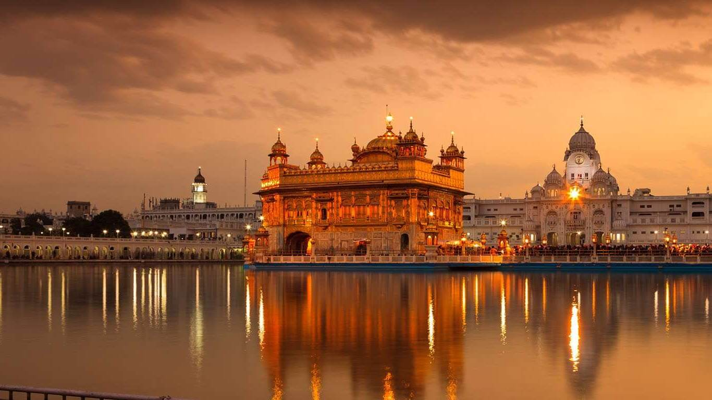
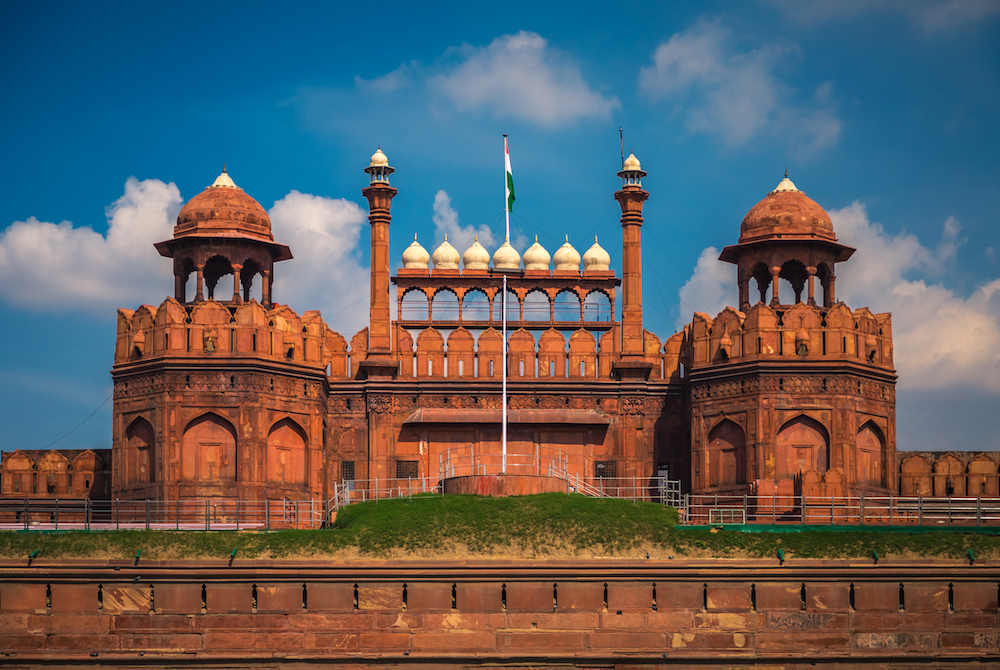

Ayodhya, India

The Ram Mandir in Ayodhya holds immense significance in Hinduism. The Ram Mandir is a partially constructed Hindu temple complex in Ayodhya, Uttar Pradesh, India. Many Hindus believe that it is located at the site of Ram Janmabhoomi, which is considered the mythical birthplace of Lord Rama, a principal deity in Hinduism
Amritsar, India
The Golden Temple is situated in the city of Amritsar, in the state of Punjab, India. The Golden Temple, also known as the Harmandir Sahib, holds a special place in Sikhism. It is the pre-eminent spiritual site for Sikhs and one of the holiest places in Sikhism. The temple complex houses the Guru Granth Sahib, the central scripture of Sikhism, which bestows upon it the highest blessing.
Delhi, India
The Red Fort (also known as Lal Qila) is an iconic monument synonymous with India’s rich political heritage, freedom, and sovereignty. The Red Fort is located in the Old Delhi neighborhood of Delhi, India. The fort represents the pinnacle of Mughal architecture under Shah Jahan, blending Persian palace architecture with Indian traditions.